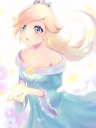

Tuiter
Home
- Topic 123
- Topic 234
- Topic 456  Rose@rose - 2h
The head of the Simpson family, Homer, is not a typical family man. A nuclear-plant employee, he does his best to lead his family but often finds that they are leading him. The family includes loving, blue-haired matriarch Marge, troublemaking son Bart, overachieving daughter Lisa and baby Maggie
Reply 123 | Retuit 234 | Like 345 | ShareSuper Mario is a platform game series created by Nintendo starring their mascot, Mario. It is the central series of the greater Mario franchise. At least one Super Mario game has been released for every major Nintendo video game console. There are more than 20 games in the series.
Reply 123 | Retuit 234 | Like 345 | ShareRosalina, known as Rosetta in Japan, is a recurring fictional character in the Mario series of video games. She debuted in Super Mario Galaxy, as a non-player character who resides in the Comet Observatory, the game's hub world.
Reply 123 | Retuit 234 | Like 345 | Share